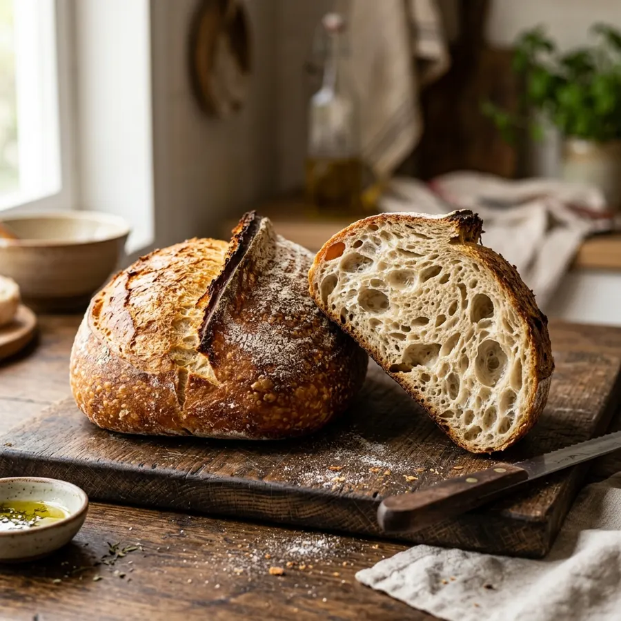
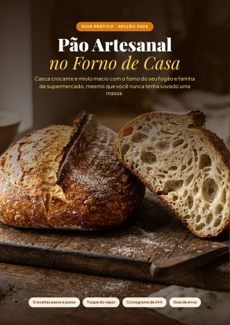
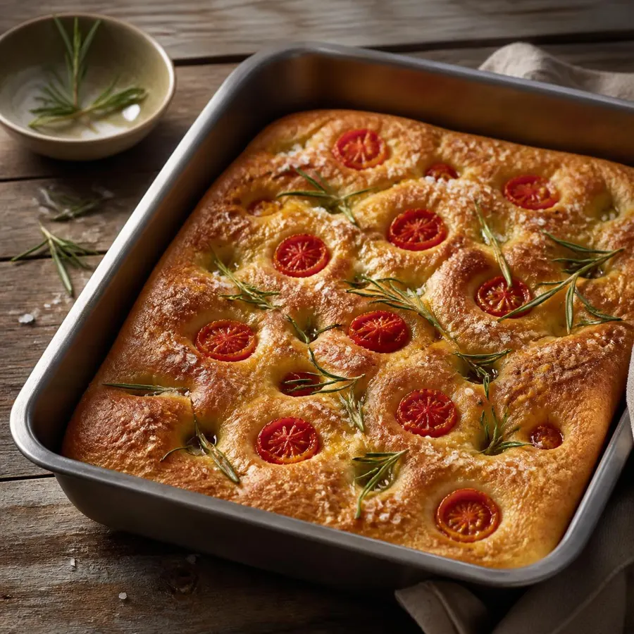
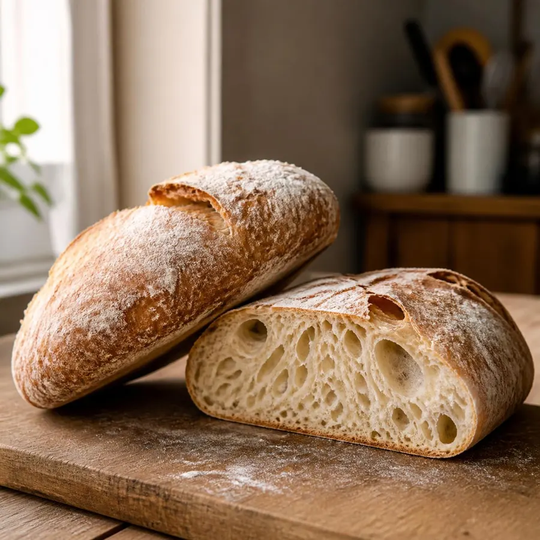
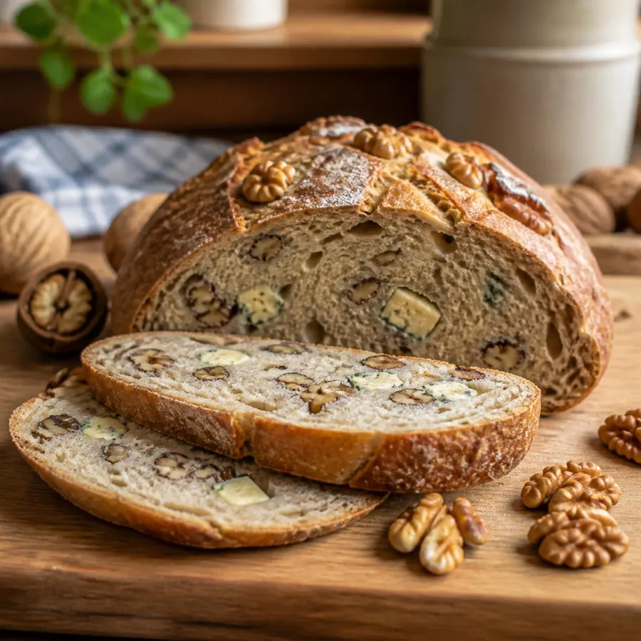
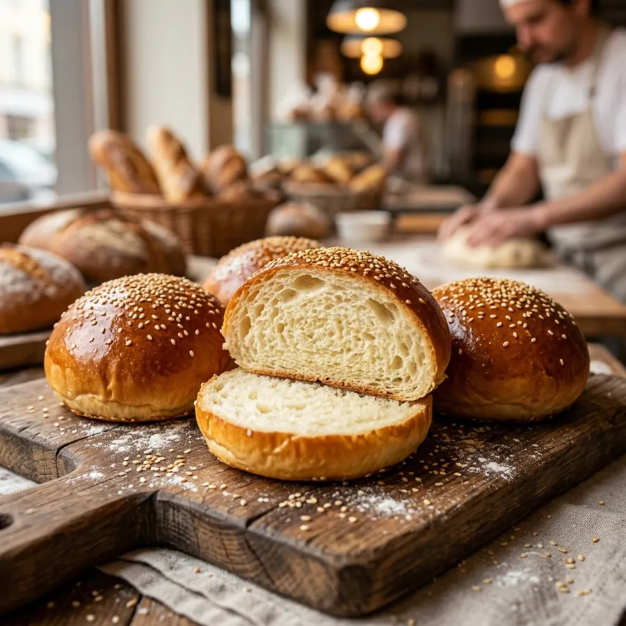
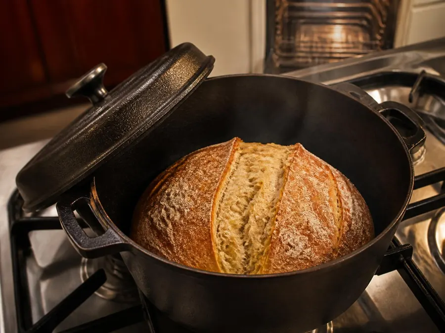
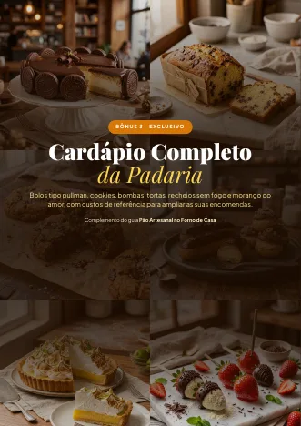

O passo a passo para fazer pão artesanal no forno comum do fogão, com farinha de supermercado, mesmo que você nunca tenha sovado uma massa.
🔒 Pagamento seguro · Pix ou cartão · Garantia de 7 dias


Não é falta de jeito. É que quase toda receita foi feita para padaria, e não para a sua cozinha.
Pensada para forno de lastro, vapor injetado e farinhas especiais que você não tem em casa.
Sem vapor, a casca endurece cedo, o pão não cresce e fica opaco. Tem solução com o que você já tem.
Pressa deixa o pão sem sabor. O segredo é o contrário: pouco fermento e uma noite na geladeira.
Um guia curto e direto, de 22 páginas, com imagens de referência e o método explicado sem palavras difíceis.
Farinha, água, fermento e tempo, e como saber se a massa fermentou.
Panela de ferro, assadeira com água ou tampa improvisada: 3 jeitos para o forno comum.
Da mais fácil à mais elaborada, com tempos, temperaturas e imagens de referência.
Rotinas prontas para a semana e para o fim de semana. O pão trabalha enquanto você dorme.
Tabela com 10 problemas comuns, a causa de cada um e o que mudar na próxima fornada.
Custo, preço, embalagem e etiqueta, para quem quiser aceitar encomendas.
Todas pensadas para o forno a gás do fogão e com ingredientes de supermercado.





| 18h00 | Misturar farinha, água e fermento (5 min) |
| 19h às 20h | Três dobras rápidas, entre uma coisa e outra |
| 22h00 | Modelar e levar à geladeira |
| 7h15 | Assar na panela, com o forno já quente |
| 9h00 | Pão frio, pronto para cortar |
Material extra para dar o próximo passo e ampliar o seu cardápio.
Quando quiser ir além do fermento de saquinho: como criar e manter o seu fermento natural.
Ideias e modelos de embalagem e etiqueta para apresentar os seus pães com capricho.

BÔNUS 3Bolos tipo pullman, cookies, bombas, tortas, recheios sem fogo e morango do amor, com tabela de custos.
Acesso imediato pela área de membros, para ler no celular ou imprimir.
+ taxa de serviço de R$ 0,99 cobrada pela plataforma de pagamento (total R$ 37,99)
QUERO O GUIA DO PÃO🔒 Pix ou cartão · Garantia de 7 dias · Acesso pela área de membros
Leia o guia e faça a sua primeira fornada. Se achar que o material não é para você, peça o reembolso em até 7 dias pela própria plataforma e você recebe 100% do valor, sem perguntas.
Sim. O guia foi pensado para o forno a gás de fogão, que é o mais comum, mas os métodos de vapor e as temperaturas funcionam em forno elétrico. Basta pré-aquecer bem.
Não. As receitas de pão rústico, focaccia, ciabatta e pão de nozes são feitas só com dobras, sem sovar. A brioche pode ser feita na mão ou na batedeira.
Não é obrigatório. O guia ensina 3 formas de criar vapor, incluindo uma com assadeira e água e outra com tampa improvisada.
Não. As receitas usam fermento biológico seco, de supermercado. Se depois você quiser o fermento natural, o Bônus 1 mostra o caminho.
Logo após a confirmação do pagamento, você recebe por e-mail o acesso à área de membros, onde ficam o guia e os bônus em PDF.
Sim. O Capítulo 6 traz cálculo de custo, preço, embalagem e etiqueta. A venda de alimentos segue regras sanitárias do seu município: o guia orienta a consultá-las. Não prometemos resultado de vendas.